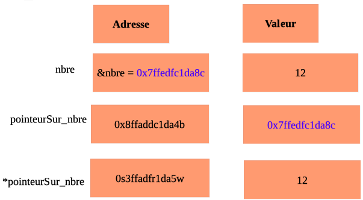

Initialement conçu pour créer le système d'exploitation Unix, le langage C est rapidement devenu un standard grâce à sa puissance, sa rapidité d'exécution et sa portabilité. Il est actuellement principalement utilisé dans l'écriture de systèmes d'exploitation, de machines virtuelles, de logiciels de calcul scientifique, d'applications en réseau.
Table des matières :
Les fichiers C ont pour extension .c
Toutes les instructions se terminent par ;
En C, chaque fonction renvoie une fois terminé une valeur. En pratique 0 signifie que tout s'est bien passé.
\n s'emploie pour un retour à la ligne.
\t s'emploie pour une tabulation.
Les commentaires sur une ligne s'expriment grâce aux symboles //. En revanche les commentaires sur plusieurs lignes figurent entre les symboles /* et */.
Avant d'être compilés, les fichiers soures S sont traités par un préprocesseur qui résoud certaines directives comme l'inclusion de fichier. Les directives de préprocesseur commencent toujours par un # et sont écrites en début de code.
L'installation de librairies se fait à l'aide de l'instruction #include <nomLibrairie>.
Commençons par le traditionnel "Hello world".
#include <stdio.h>
#include <stdlib.h>
int main(int argc, char* argv[]){
printf("Hello world");
return 0;
}
C n'est pas un langage dynamique. Il est nécessaire que définir le type de variables avant leur utilisation. Les différents types de variables en C sont les suivants :
C est un langage faiblement typé, et ne dispose que de 4 types de variables.
| Types | Mots-clés |
|---|---|
| entier court | char |
| entier | int |
| entier long | long |
| nombre décimal | float |
| nombre décimal long | double |
| entier court positif | unsigned char |
| entier positif | unsigned int |
| entier long positif | unsigned long |
Attention, bien que le type char soit utilisé pour représenter des caractères, il représente quand même initialement en C des nombres compris entre -128 et 127.
Attention, les unsigned char, unsigned int, ... sont en fait des nombres positifs. La plage mémoire qu'ils occupent a donc été déplacée vers la droite. Ainsi, les nombres de type unsigned char sont compris entre 0 et 255. Tous ces différents types de nombres ont été créés pour économiser de la mémoire lors de leur déclaration.
Au moment de la déclaration d'une variable, C réserve un emplacement en mémoire, mais la valeur attribuée initialement à la variable correspond à la dernière valeur prise par cet emplacement de mémoire. Il est donc important de déclarer et d'initialiser en même temps pour éviter des erreurs, en attribuant par exemple la valeur 0 à la variable.
En C il n'existe pas de type booleen. On fait donc prendre les valeurs 0 et 1 à une variable qui va jouer le rôle d'un booléen. Il n'existe pas non plus de type chaîne de caractères. En revanche, le type char qui est un type particulier de nombres compris entre -128 et 127, permet en fait de représenter des caractères. La correspondance entre les nombres et les caractères est assurée par la table ASCII.
printf("Antoine a %d ans et %d voitures", age, nbreVoitures);
| Types | Mots-clés |
|---|---|
| int | %d |
| long | %ld |
| float | %f |
| pointeur | %p |
| char | %d pour afficher le nombre, %c pour afficher le caractère |
| chaîne de caractères | %s |
| float en notation scientifique | %e |
On déclare une constante en C avec l'instruction :
const int MON_NOMBRE = 5;
| Opérations | Symboles |
|---|---|
| addition | + |
| soustraction | - |
| multiplication | * |
| division pour des nombres décimaux | / |
| partie entière d'une division | / |
| modulo | % |
| concaténation | + |
| affectation | = |
| égalité | == |
| incrémentation | ++ |
| décrémentation | -- |
| ET logique | && |
| OU logique | || |
| NON logique | ! |
En C, le signe division / n'a pas le même sens selon que les termes de calcul sont des entiers ou des décimaux.
| Type | Calcul | Résultat |
|---|---|---|
int a = 5; int b = 2; | int resultat = a/b | 2 |
int a = 5; int b = 2; | float resultat = a/b | 2.0 |
float a = 5.0; float b = 2.0; | float resultat = a/b | 2.5 |
| Signification | Opérateurs |
|---|---|
| égalité | == |
| égalité (valeur et type) | === |
| différent | != |
| inférieur | < |
| inférieur ou égal | <= |
| supérieur | > |
| supérieur ou égal | >= |
Les tableaux en C sont des objets contenant des variables de même type, et disposant d'une taille fixée.
Notons que les adresses des variables d'un tableau sont contigues.
Pour définir un tableau de 5 int :
int tableau[5];
Pour initialiser un tableau lorsqu'on connaît les valeurs à l'avance :
int tableau[5] = {0, 4, 3, 5, 2};
Il est également possible de laisser le compilateur déterminer la taille du tableau lorsqu'on lui donne les valeurs à l'avance :
int tableau[] = {0, 4, 3, 5, 2};
Comme dans tous les langages, le premier indice d'un tableau est 0.
Par ailleurs, le code suivant renvoie l'adresse de la première case du tableau :
int tab[5];
print("%d", tab);
Pour parcourir un tableau :
for(int i=0; i<5; i++){
printf("%d \n", tableau[i];
}
| Propriétés | Codes |
|---|---|
| taille | sizeof tab / sizeof tab[0] |
| élément d'indice i | tab[i] |
| dernier élément d'une liste | tab[-1] |
| modifier l'élément d'indice i | tab[i] = nouvelleValeur |
| indice d'un élément | tab.index(element) |
int tableau[5] = {1};
Cette instruction va en fait affecter la valeur 1 au 1er élément du tableau, puis la valeur 0 aux quatre autres.
En C un caractère est en fait un nombre stocké tel quel dans la mémoire et affiché sous forme de caractère grâce à la table ASCII, si on le spécifie en utilisant l'attribut %c.
char lettre = 'a';
printf("%d", lettre);
affiche 97. En revanche, le code :
char lettre = 'a';
printf("%c", lettre);
affiche bien la lettre a.
Notons que les caractères sont obligatoirement entourés de ' alors que les chaînes de caractères sont entourées de ".
En C, une chaîne de caractères est un tableau de caractères de type char dont le dernier élément est \0. Il s'agit en fait d'un caractère de contrôle non affichable qui permet d'indiquer la fin de la chaîne. Ainsi une chaîne composée de n éléments sera en fait un tableau de n+1 éléments. La taille d'une chaîne de caractères est immuable une fois initialisée. On peut toutefois n'utiliser que partiellement l'espace alloué en insérant le caractère de fin de chaîne \0 à un emplacement avant la fin du tableau.
La bibliothèque string.h offre une multitude de fonctions dédiées aux chaînes.
#include <string.h>
Pour définir une chaîne de caractères, il faut définir la taille de la chaîne de caractères. On pourra prendre une taille supérieure à la taille effective, car une fois définie, la taille ne pourra plus être modifiée. Dans ce cas, les emplacements non utilisés restent vides, mais occupent quand même de la place mémoire.
char chaine[100]; chaine[0] = 'b'; chaine[1] = 'o'; chaine[2] = 'n'; chaine[3] = 'j'; chaine[4] = 'o'; chaine[5] = 'u'; chaine[6] = 'r'; chaine[7] = '\0';
On pourra également faire une déclaration dans une même accolade, et dans ce cas la taille du tableau est lue par le processeur et il est inutile de la spécifier :
char chaine[] = {'b', 'o', 'n', 'j', 'o', 'u', 'r', '\0'};
Dans la pratique, pour initialiser et afficher une chaîne de caractères, on utilisera plutôt :
char chaine[] = "bonjour";
printf("%s", chaine);
Il n'est pas non plus nécessaire de définir la taille du tableau représentant la chaine. Par ailleurs, en utilisant l'élément %s, il s'affiche bien des lettres et non des chiffres comme on aurait pu le craindre.
Attention, cette méthode de déclaration-initialisation automatique d'une chaîne de caractères ne fonctionne qu'au moment de l'initialisation. Après il est impossible d'écrire chaine = "bonjour". Il faudra ensuite utiliser une boucle pour définir la chaine.
Notons qu'une chaîne de caractères n'est en principe pas modifiable. Toutefois, il est quand même possible de créer d'autres chaînes de caractères à partir d'une chaîne initiale.
| Propriétés | Codes |
|---|---|
| taille sans compter le \0 | strlen(chaine) |
| copie d'une chaîne à l'intérieur d'une autre | strcpy(chaineAcopier, chaineDestinataire) |
| concaténer chaine1 dans chaine2 | strcat(chaine1, chaine2) |
| comparer deux chaînes | strcmp(chaine1, chaine2) |
| renvoyer le reste de la chaine à partir du caractère a | strchr(chaine, 'a') |
| renvoyer le reste de la chaine à partir de souschaine trouvé dans la chaine | strstr(chaine, souschaine) |
| écrire une sous chaine dans une chaîne | sprintf(chaine, sousChaine) |
Attention, de façon contre-intuitive, la comparaison de deux chaines renvoie 0 si les chaînes sont identiques et un nombre positif ou négatif sinon.
Attention à l'utilisation particulière des instructions ci-dessus qui utilisent systématiquement un pointeur.
char chaine[] = "bien le bonjour";
char *suiteChaine = NULL;
suiteChaine = strstr(chaine, "on");
if (suiteChaine != NULL){
printf("%s", suiteChaine);
}
Dans le cas d'une valeur numérique, on saisit la variable age sous forme d'adresse :
int age = 0;
printf("Quel âge avez-vous ?");
scanf("%d", &age);
printf("Vous avez %d ans, age);
Dans le cas d'une chaine de caractères :
char nom[100];
printf("quel est votre nom?");
scanf("%s", nom);
Si le nombre saisi par l'utilisateur ne correspond pas au type, C ne lève pas une exception mais conserve la valeur initialisée de la variable. Si le type attendu est int mais que le type saisi est en fait float, C ne va toujours pas lever une exception mais tronquer le nombre saisi pour le transformer en entier.
if (condition){
instructions;
}
else{
instructions;
}
Il est possible d'enchaîner les else.
if (condition){
instructions;
}
else if{
instructions;
}
else{
instructions;
}
switch(maVariable){
case valeur1:
instruction;
break;
case valeur2:
instruction;
break;
case valeur3:
instruction;
break;
default:
instruction;
}
while (condition){
instructions;
}
for (int i=0; i<5; i++){
instructions;
}
for elmt in chaine : instructions
for lettre in chaine :
if lettre in "aeiouy" :
instructions
Le mot clé break permet d'interrompre une boucle et d'exécuter le code qui suit la boucle. Le mot clé continue permet de continuer une boucle en repartant du début du bloc sans exécuter ce qui suit continue dans le bloc.
type maFonction(type parametre){
instructions;
return resultat
}
Pour les fonctions qui ne renvoient pas de valeur (appelées procédures), on remplace le type par void et on renvoie return 0.
Afin de pouvoir lire des fonctions se trouvant après la méthode main(), il faut d'abord déclarer ces fonctions en début de code derrière les préconditions en rajoutant le prototype des fonctions utilisées :
#include <stdio.h> #include <stlib.h> type maFonction(type parametre);
En fait, il existe deux types de fichiers, les .c qui sont les codes sources et les .h appelés headers qui contiennent les prototypes des fonctions. Il faut importer ces fichiers .h en tant que préconditions dans les fichiers .c pour éviter d'avoir à rajouter tous les prototypes en début de code.
#include <stdio.h> #include <stlib.h> #include "monFichier.h" # en reference a monFichier.c
Notons que les fichiers sont importés sans chevron mais avec des guillemets alors que les packages sont importés avec chevrons.
Attention, cette règle d'emploi des prototypes est importante. Lorsqu'on appelle une fonction située dans monFichier.c depuis le fichier main.c il est nécessaire d'inclure le prototype de cette fonction dans les préconditions pour que le compilateur puisse vérifier que l'appel de la fonction est conforme à sa declaration. Il est donc nécessaire d'importer monFichier.h pour utiliser une fonction de monFichier.c
Un pointeur est une variable particulière contenant l'adresse d'une autre variable. Pour créer un pointeur, on rajoute le symbole * au type de variable :
int* maVariable;
Considérons la variable nbre à laquelle on affecte la valeur 12. L'adresse de la variable nbre est notée &nbre et donnée par le pointeur pointeurSur_nbre. L'instruction *pointeurSur_nbre permet d'accéder à la valeur de nbre à partir de son pointeur.
Le code suivant :
int nbre = 12;
int* pointeur = &nbre;
printf("%d \n", nbre);
printf("%p \n", &nbre);
printf("%p \n", pointeur);
printf("%d", *pointeur);
affiche le résultat :
12
0x7ffedfc1da8c
0x7ffedfc1da8c
12
L'adresse d'une variable est écrite en hexadécimal. Il est par ailleurs important d'initialiser un pointeur avec la valeur NULL.
Le code suivant renvoie la valeur 0 car la valeur modifiée de maVariable reste dans la fonction modification(). En effet maVariable n'a pas une portée globale, ce qui serait à proscrire. On pourrait contourner ce problème en définissant une variable prenant la valeur de maVariable dans le main.
void modification(int parametre);
int main(int argc, char* argv[]) {
int maVariable = 0;
modification(maVariable);
printf("%d", maVariable);
return (EXIT_SUCCESS);
}
void modification(int parametre){
parametre = parametre+2;
}
Si on modifie ce code en utilisant un pointeur, on peut changer la valeur de maVariable bien qu'elle ne soit pas globale. On obtient dans ce cas 2 :
void modification(int* pointeurParametre);
int main(int argc, char* argv[]) {
int maVariable = 0;
modification(&maVariable);
printf("%d", maVariable);
return (EXIT_SUCCESS);
}
void modification(int* pointeurParametre){
*pointeurParametre = *pointeurParametre+2;
}
Il est rarement judicieux de déclarer une variable globale. Pourtant C proposer de modifier une variable sans la déclarer globale, mais en travaillant sur son adresse à l'aide du pointeur qui lui est associé. L'exemple suivant ne permet pas d'inverser la valeur des variables a et b :
void permuter(int a, int b);
int main(int argc, char* argv[]) {
int a = 10;
int b = 20;
permuter(a, b);
printf("%d, %d", a, b);
return (EXIT_SUCCESS);
}
void permuter(int a, int b){
int c;
c = a;
a = b;
b = c;
}
En revanche, l'utilisation des pointeurs *a et *b permet d'obtenir le résultat voulu :
void permuter(int *a, int *b);
int main(int argc, char* argv[]) {
int a = 10;
int b = 20;
permuter(&a, &b);
printf("%d, %d", a, b);
return (EXIT_SUCCESS);
}
void permuter(int *a, int *b){
int c;
c = *a;
*a = *b;
*b = c;
}
On peut également, comme dans de nombreux autres langages, renvoyer un tableau pour obtenir le résultat voulu :
#include <math.h>
| Instruction | Effet obtenu |
|---|---|
| floor(x) | plus grand entier inférieur ou égal à x, renvoie un double |
| ceil(x) | plus petit entier supérieur ou égal à x, renvoie un double |
| fabs(x) | valeur absolue de x, renvoie un double |
| exp(x) | exponentielle de x, renvoie un double |
| log(x) | logarithme en base e de x, renvoie un double |
| pow(x, y) | x puissance y |
| sqrt(x) | racine carrée de x, renvoie un double |
| pi | pi = 3,14 |
| cos(x) | cosinus de x pour x en radians, renvoie un double |
| sin(x) | sinus de x pour x en radians, renvoie un double |
| tan(x) | tangente de x pour x en radians, renvoie un double |
| acos(x) | arc cosinus de x en radians, renvoie un double |
| asin(x) | arc sinus de x en radians, renvoie un double |
| atan(x) | arc tangente de x en radians, renvoie un double |